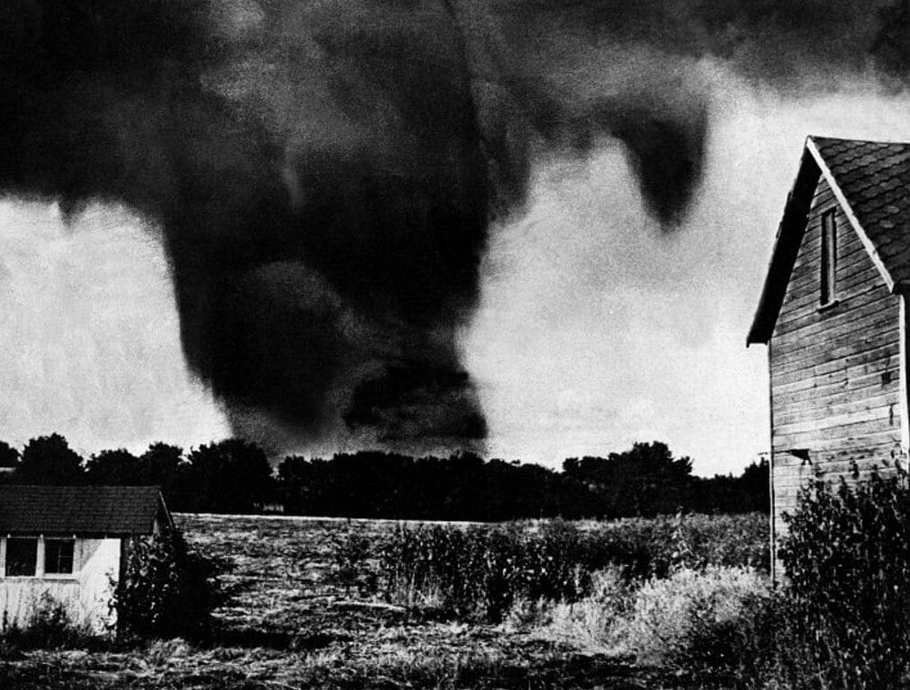

The Tri-State Tornado
A Monster on the Ground: On the afternoon of March 18, 1925, the skies over the American Midwest birthed an unprecedented meteorological monster. Touching down near Ellington, Missouri, a massive tornado began a relentless, record-breaking trek. Unlike typical tornadoes that hop or dissipate after a few miles, this violent vortex stayed on the ground continuously for a staggering 219 miles, carving a continuous scar across Missouri, Illinois, and Indiana. For 3.5 hours, it moved with terrifying forward momentum, reaching speeds of over 70 miles per hour, leaving residents virtually no time to react or seek shelter.

The Unseen Threat: Part of what made the Tri-State Tornado so incredibly lethal was its appearance. Witnesses reported that it did not look like a classic, distinct funnel cloud. Instead, due to its massive size (at times over a mile wide) and the sheer volume of dirt and debris it had swallowed, it appeared as a low-hanging, boiling wall of black clouds rolling across the earth. Because people did not recognize it as a tornado until it was directly upon them, entire towns, such as Murphysboro and Gorham in Illinois, were caught completely off guard and essentially wiped off the map.
Key Facts
Date: March 18, 1925
Location: Missouri, Illinois, and Indiana (United States)
Casualties: 695 dead, over 2,000 severely injured; dozens of towns destroyed and 15,000 homes leveled.
Cause: An exceptionally long-lived, fast-moving, massive tornado (retroactively classified as an EF5) spawned by a powerful springtime storm system.
Lesson: To this day, the Tri-State Tornado remains the deadliest single tornado in United States history, claiming 695 lives and injuring thousands more. The tragedy was compounded by the fact that, at the time, the U.S. Weather Bureau had a strict policy banning the word "tornado" from weather forecasts to prevent public panic. Consequently, absolutely no official warnings were issued. The staggering loss of life from this single, fast-moving storm forced a monumental reckoning in meteorological science. It ultimately led to the lifting of the ban on tornado warnings, fundamentally shifting the focus of the National Weather Service toward proactive severe weather tracking, public broadcast warnings, and the eventual creation of modern storm spotter networks.